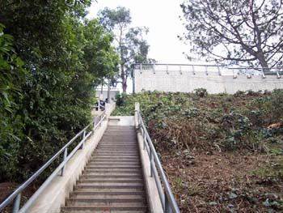

Godišnje liste
ponedeljek, 11. december 2006. u 1:40 PM
Piše: La Lara
Rubrike: Creative Economy | Knjiga utisaka | Tabloid Buzz
Kraj jedne i početak nove godine je idealno vreme za pravljenje listi. Mediji širom sveta ih već uveliko prave i objavljuju. U New York Timesu zanimljive su liste 100 najboljih knjiga godine i šesti po redu izbor za ideje godine, ima ih svakakvih. Muzički časopisi su proglasili svoje favorite, a na tu temu biće dosta toga i na Yahti. Časopis Forbes liste svih mogućih vrsta objavljuje tokom cele godine, to je deo njegovog brenda.
Očekujem da u drugoj polovini meseca i ovdašnji mediji krenu sa svojim listama, pitanje je samo da li će biti nekih interesantnih kategorija. Moje omiljene bile su svojevremeno Godišnje nagrade Ritma srca...
***
Entrepreneur Magazine objavio je dugu listu Hot Biznisa za 2007 godinu, izdvajam nekoliko:
-Green Products
-Alternative Energy
-Dessert-Only Restaurants
-Chocolate
Čokolada je hit, kažu istraživački američkog tržišta, a prenosi ovaj časopis: "Chocolate has officially gone from sinful to unstoppable. In fact, trend-watching firm Datamonitor named chocolate “the new coffee” in a list of the top 10 trends to watch."
-Healthy Food
Što zdravije, to bolje. Omega tri masne kiseline, o čijim se blagodetima mnogo govorilo, sada se dodaju i u bonbone. Kao što se dodaje u razne druge proizvode vitamin C i drugi sastojci. Ipak, buzzword je 'organic'.
-Wine
-Coffeehouses
-Virtual Economies
-Teen Party Planning
Po onome što čujem da se dešava u Beogradu, i ovde je već zađivela raznovrsna ponuda žurki za decu i tinejdžere: Od partija u popularnim iznajmljenim kafićima, do partija u igraonicama raznih vrsta, do maskenbaal za decu i odrasle...A u Americi to izgleda ovako:
"Blame MTV’s My Super Sweet 16 for showing teens nationwide the extremes the super-wealthy go to for a child’s coming-of-age soiree."
-Employee Screening
Od ovoga smo još uvek daleko. Ili bar tako mislim, hm.: "The industry is trending toward one-stop shopping, offering pre-employment drug and alcohol testing as well as education verification, fingerprinting, credit and driving history reports, INS verification, and background checks for criminal or terrorist activities."
***
Nemam precizno ideju šta bi bili hot biznisi u Srbiji u narednoj godini. Videla sam npr. oglas u jednom nedeljniku, zvuči kao dobra opcija: "Izrada projekata i biznis planova za donacije i kredite." Onda, mislim da ne bi bilo loše skoncentrisati se na otvaranje novih sportskih centara. Znam da se otvaraju, ali istraživanja, lična i posredna, govore da spadaju ili u kategoriju trash (po školama, obdaništima, podrumima...) ili VIP-fancy-preskupih. Moja treća random ideja je skoro sve vezano za proizvodnju sadržaja na Internetu. Jer, mislim, iako do sada nisu, pretpostavljam da će ovdašnji mediji i firme ipak uskoro shvatiti da sem osnovnih informacija i već objavljenih vesti, moraju ponuditi još nešto.Stara je vest da skoro svaki sajt iole profesionalnije firme npr. u Americi ima i blog koji se piše da se ostvari direktna i stalna komunikacija sa potrošačima ili onima koji će tek to postati, zainteresovanom javnošću, stručnjacima, itd. Takve blogove, ali i druge sadržaje na
sajtu, ipak ne može da piše svako, treba nekog umeća i iskustva. Pa bi to bila neka ideja za
naše malo tržište. Reklamna pesmica bi mogla biti npr.
Tell me lies
Tell me sweet little lies
Ima li još nekih ideja za ovu listu?
p.s. Na slici su stepenice u LA (gde se jedna mala svojevremeno rekreirala)
Komentari
 Ljube | 12.12.06 10:49
Ljube | 12.12.06 10:49
Kao što se da primetiti, hrana, hrana, hrana!
elektrokuhinja | 12.12.06 18:39
La Lara | 13.12.06 10:35
 RSS feed
RSS feed
 sadržaji se objavljuju pod
sadržaji se objavljuju pod
Jao vidi stepenice! To ti je u Santa Moniki.
KittyF | 11.12.06 21:52